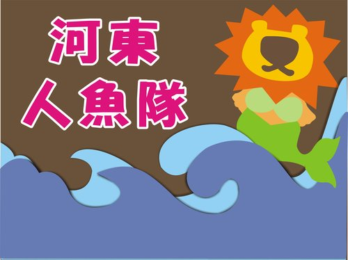
如魚得水，人人如魚。水中悠游真愜意！
美人魚 ，人魚線 。盡在河東人魚隊！
帥哥多 ，美女多 。青春健康有活力！
游得快 ，游得美 。河東人魚得第一！
河東人魚，加油！ 加油！ 加油！
河東人魚隊所屬之帥哥美女啦啦隊誘人的口號，
差點震破高雄國際標準游泳池之屋頂！
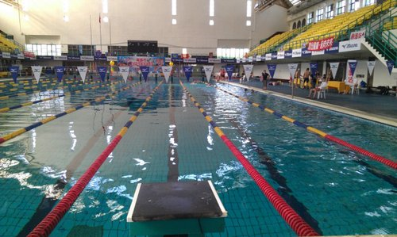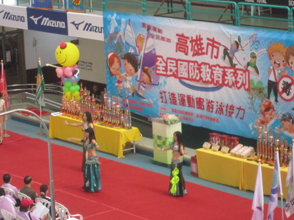
左：國際標準池長50米，水深3米，室內挑高設計，游悠其中，非常過癮。
右：主辦單位邀請三位美女表演精彩之肚皮舞熱場。
河東自行車社轄下之游泳部，
為響應高雄市政府舉辦
「102年打造運動島計畫—運動樂活島推廣專案」，
經社長Ted之動員號召，大家集思廣益票選隊名，
「河東人魚隊」獲得眾人垂愛脫穎而出，
此次為參加「企業機關游泳接力派對」，
隊員為五男一女共6人，每人游泳50公尺 。
另親子接力賽為親子各游50公尺 。
本社黑髮美女Leila並熱心擔任啦啦隊長，
且製作吸引眾人目光之河東人魚海報及加油扇，
其餘人魚隊員、親友團則合組美女帥哥啦啦隊到場聲援加油。
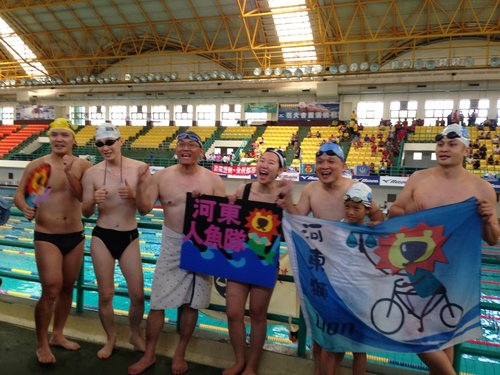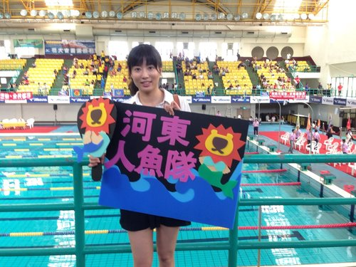
「美人魚！人魚線！」口號一喊，
再搭配真真實實、如假包換的美女帥哥陣容，
獅頭魚身可愛的加油扇，搧阿搧！
本隊瞬間成為觀眾及評審團目光匯集的焦點。
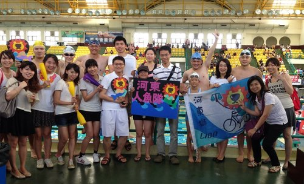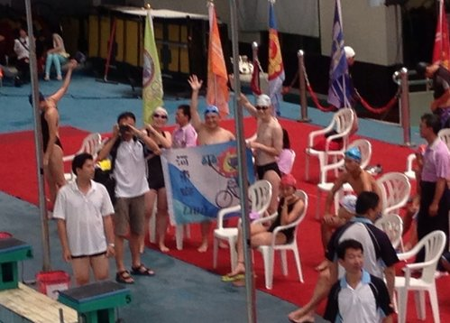
上：本隊出場時，河東人魚啦啦隊於看台上熱情的加油聲，馬上成為全場鎂光燈的焦點.
下：加油看板、加油扇、加油棒，再加上火辣的美女加油團，誰人呷阮比！
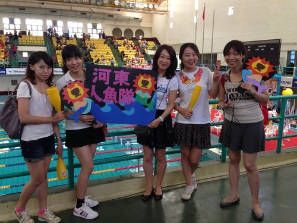
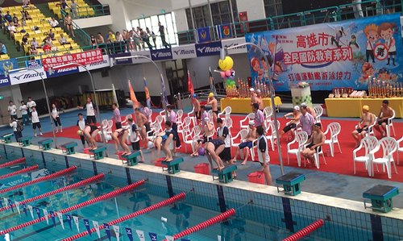
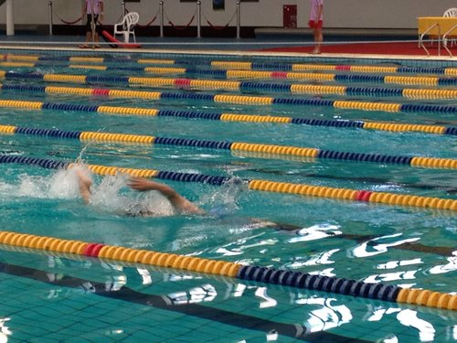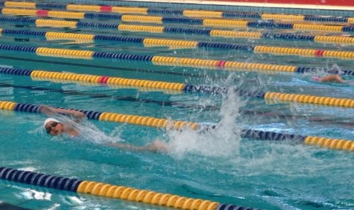
在眾人加油聲下，本隊選手成績讓人跌破眼鏡！
六人接力賽，勇奪機關組第二名，
親子組接力賽，則奪下季軍獎盃。
最振奮人心的莫不過是當大會宣布，
河東人魚隊由於：
堅強的美女帥哥啦啦隊陣容，
貨真價實的美人魚，人魚線隊呼，
亮眼的海報、隊旗，
加上選手的傑出表現，
經大會評審團一致評定獲得「最佳團隊獎」，
人魚隊雀躍的歡呼聲，大家欣喜若狂！
全體隊員站在頒獎台上，汗水、淚水兩矇矓~
除了接下巨大的獎盃外，在場所有隊員亦均獲獎牌一面！
河東人魚隊~~初試啼聲~~真是一鳴驚人！
(河東獅人魚部部長謹誌)
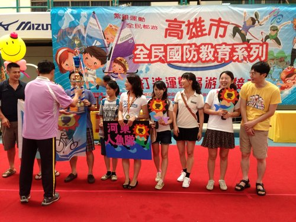
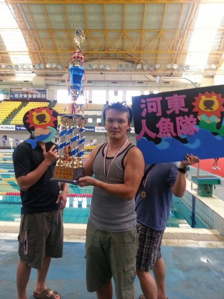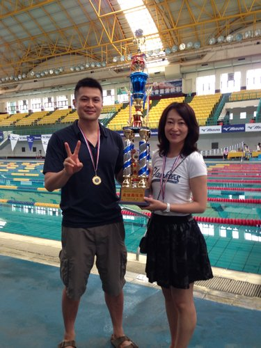
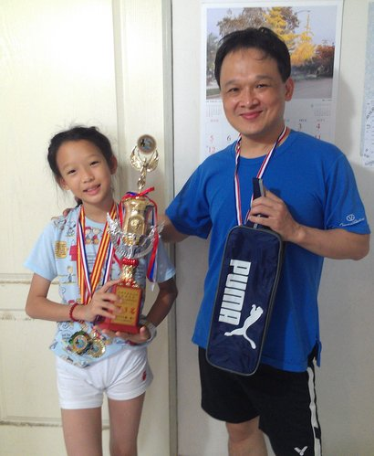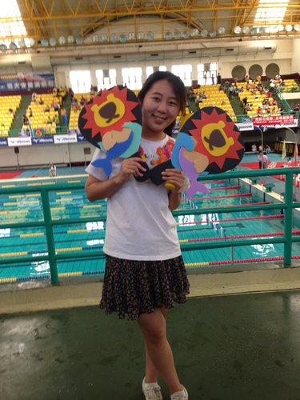
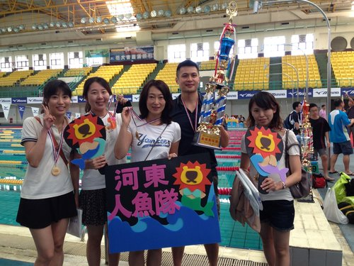
選手賽後心聲：
站上跳水台，等待隊友靠過來，
心情不耐又期待，想把缺口補回來，
縱身入池向前衝，捨我其誰兵兵澎彭，
愈近終點愈矇矓，兩手雙腿已沈重，愈速不達懊惱中.....。
短短不到一分鐘的泳程，卻引起我這一連串情愫，
感謝河東獅帥哥美女啦啦隊，
不管是製作pop看板、敲加油棒、吹鎍吶、攝影的，
還是出一張嘴「出聲喊加油」的，
沒有你們我們可能游不出這樣好成績。
還有明誠分公司的珠珠、台中分公司專程南下的隊友小珮，
以及鳳山宿舍代表「辣媽」，妳們的熱情支持，
更激勵我們選手的鬥志，
河東人魚隊愛妳喔！（阿祥）
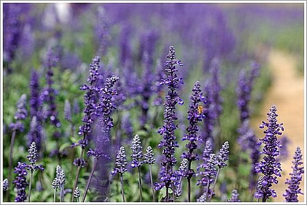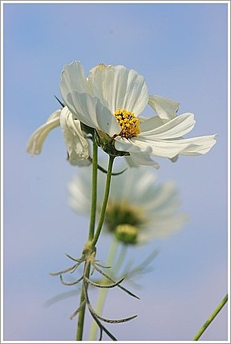
天啊～～才開啟部落格，就先被映入眼簾的大海報震懾到....接下來的內容，更是令人熱血沸騰...帥哥、美女、人魚線，全部都名符其實....選手心得更是妙語如珠！原來游泳可以這麼好玩.........。